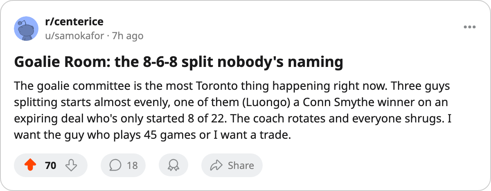

TOR
TORGoalie Room: The 8-6-8 committee and the $1.20M problem nobody's naming
Luongo started 8 of 22, Tellqvist started 8, and his Index has slid 5 spots with 6 contract years left
 Sam OkaforLeafs beat reporter · Queen City Telegram
Sam OkaforLeafs beat reporter · Queen City Telegram
Three goaltenders, 22 games, no starter.  Roberto Luongo95 has started 8. Maxime Ouellet86 has started 6. Mikael Tellqvist73 has started 8. The split is even, the minutes are near-identical (60.8, 60.7, 60.5 per game across their respective appearances), and the coach has not committed.
Roberto Luongo95 has started 8. Maxime Ouellet86 has started 6. Mikael Tellqvist73 has started 8. The split is even, the minutes are near-identical (60.8, 60.7, 60.5 per game across their respective appearances), and the coach has not committed.
Luongo finished last June with the Conn Smythe, the Jennings, and the Cup. He is 26, has the highest overall grade on the roster at 95, and is on a 1-year deal at $1.60M. Eight starts in 22 games is the workload of a backup. His morale reads 86, the lowest of the three.
Tellqvist started the season as the G2 and has never left the slot, but the Bureau's Development Index has him at -5, the deepest faller among all Toronto players. His base is 77 and the Index reads his current overall at 73. He is 26 with potential at 91 and 6 years left on a $1.20M contract. A goaltender sliding five spots on the form term with a half-decade commitment is a problem.
Ouellet, 24, overall 86, sits between them with 6 starts and a 1-year deal at $0.90M. His morale is 97, the highest of the three. He is on an expiring contract, which makes him the easiest man to move at the trade deadline if the committee needs trimming.
What the numbers say about the committee
The defence in front of the trio has been steady enough. Toronto has allowed 45 goals in 22 games, and the last 10 have produced 25 goals against across 10 appearances from all three men combined. The team is 6-3-1 in that stretch. None of those numbers look catastrophic.
Luongo's agent knows his client is playing backup minutes on a one-year deal with 26-year-old legs. Tellqvist's slide is measurable, the Index revision is public, and a -5 with 6 years left at $1.20M is dead money the day the committee decides someone has to sit.
| Player | GP | Overall | Index | Morale | Salary | Years left |
|---|---|---|---|---|---|---|
| Roberto Luongo | 8 | 95 | 0 | 86 | $1.60M | 1 |
| Maxime Ouellet | 6 | 86 | 0 | 97 | $0.90M | 1 |
| Mikael Tellqvist | 8 | 73 | -5 | 97 | $1.20M | 6 |
Tellqvist is on a 4-game slide by starts, appearing most recently on 11/16 against  Detroit Red Wings. Luongo took the last two wins, against
Detroit Red Wings. Luongo took the last two wins, against  Ottawa Senators in overtime on 11/25 and
Ottawa Senators in overtime on 11/25 and  Washington Capitals on 11/26. The coach is rotating based on who is hot and who has rested, which is defensible over 82 games but leaves the question unanswered every week.
Washington Capitals on 11/26. The coach is rotating based on who is hot and who has rested, which is defensible over 82 games but leaves the question unanswered every week.
 Philadelphia Flyers visits Thursday with 9-8-1 and
Philadelphia Flyers visits Thursday with 9-8-1 and  Marco Sturm85 on the shelf until December 30. The Flyers' offense runs through their top line, and whoever starts will face the kind of pressure that decides whether the committee continues or the rotation ends. Toronto's next five include three opponents on losing streaks, which means the goaltender will face volume rather than quality.
Marco Sturm85 on the shelf until December 30. The Flyers' offense runs through their top line, and whoever starts will face the kind of pressure that decides whether the committee continues or the rotation ends. Toronto's next five include three opponents on losing streaks, which means the goaltender will face volume rather than quality.
